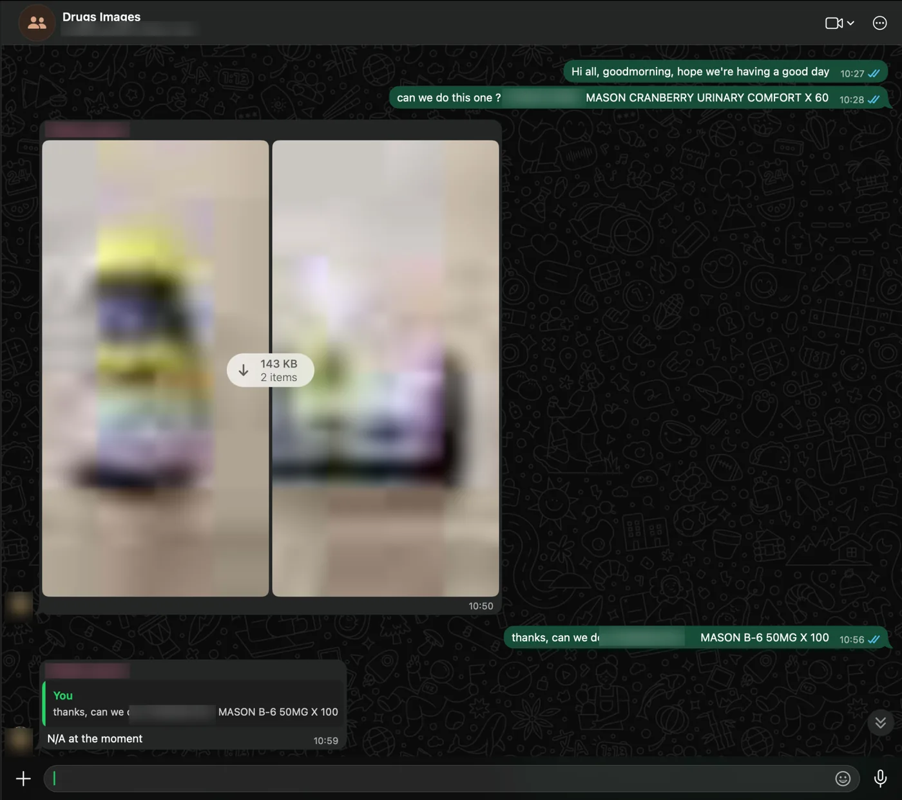
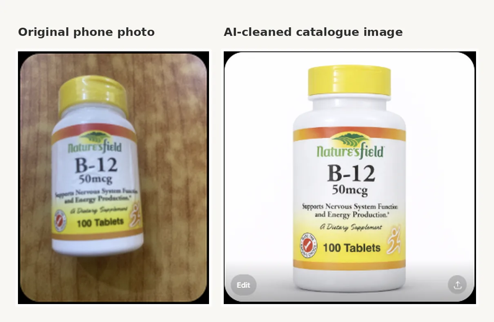
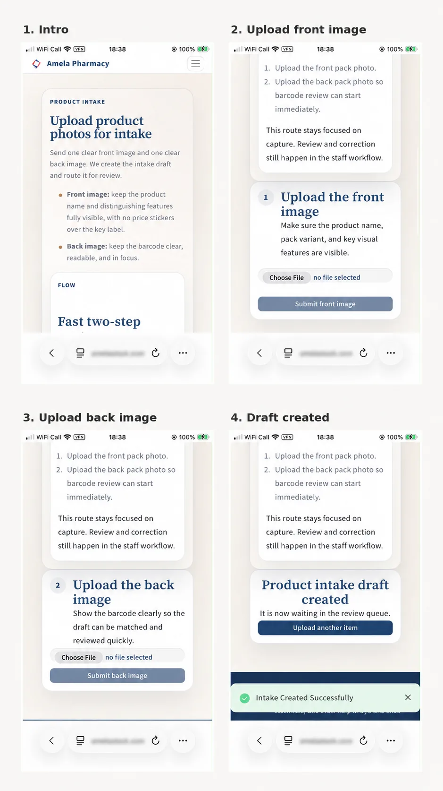
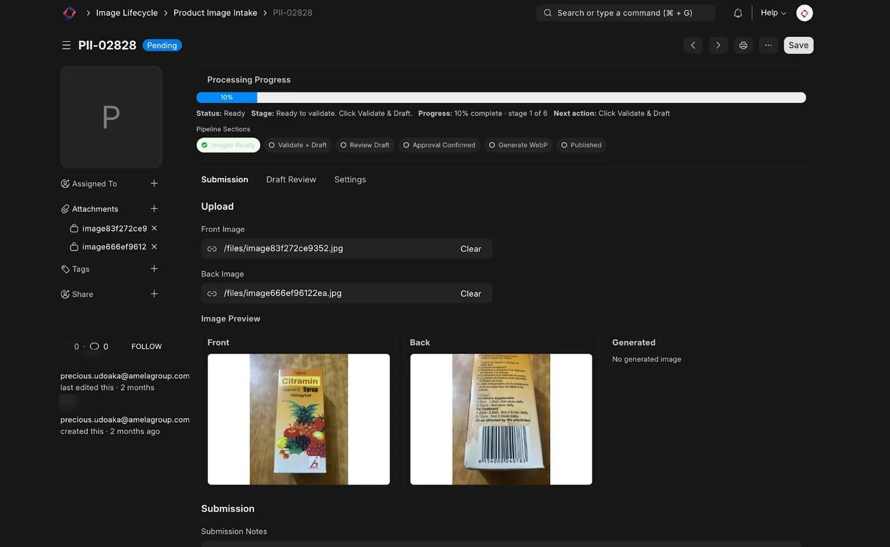
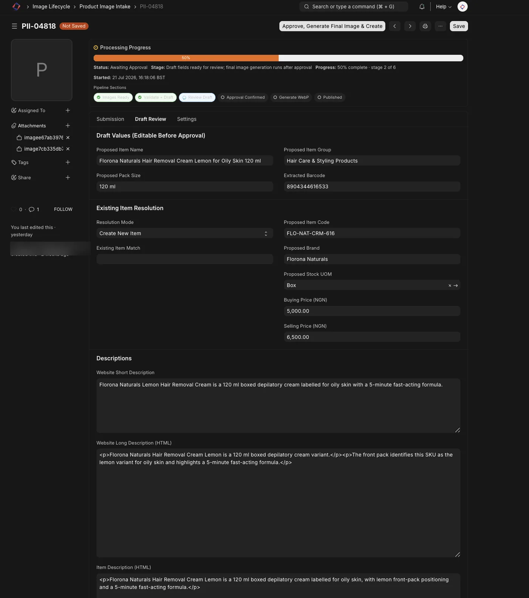
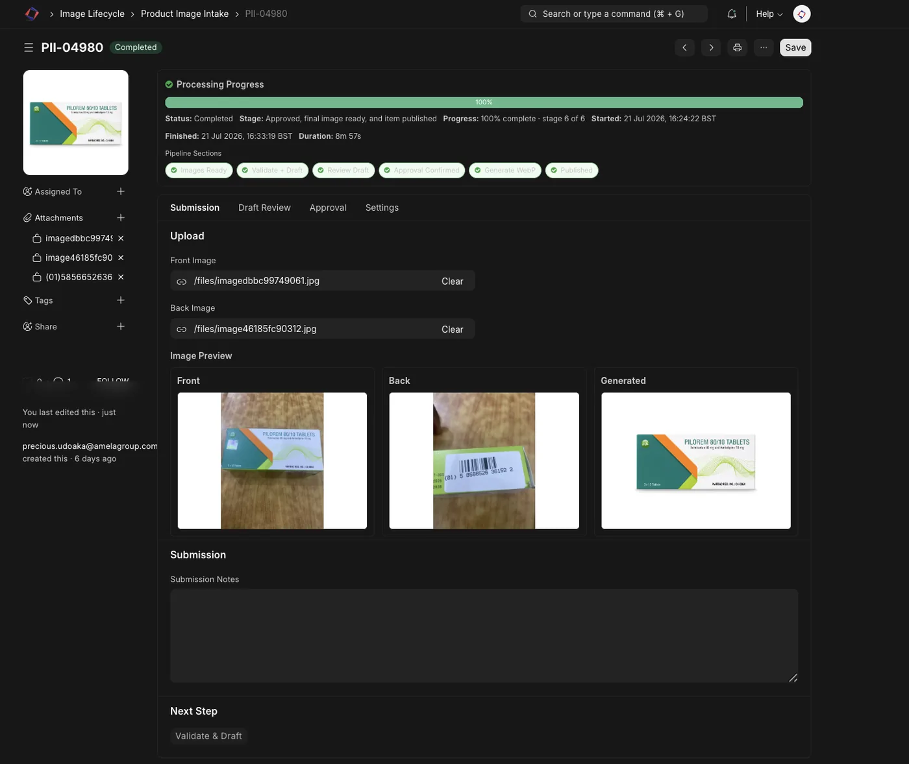

I Had 11,000 Messy Legacy Inventory Rows. Making Sense of Them Became an ERPNext Workflow
A few months ago, I started trying to make sense of years of messy inventory data so we could recreate the useful parts of it properly in ERPNext.
I was new to ERPNext, so I spent a lot of time in the documentation first. I started with the Item master, because for a medium-sized business such as ours that is really the backbone of the inventory side of the system. I needed to understand item codes, item names, descriptions, barcodes, buying and selling prices, and how those records fed into the rest of ERPNext.
Because I also decided to add the Webshop app, I had the Website Item fields to think about too: website names, short descriptions, images and the other catalogue information. Not all of that went in first time round, but I understood enough to get started.
Our business had used other inventory and POS systems before ERPNext. We had moved between a couple of providers over the years, and the more recent system at least had some cloud functionality for viewing inventory movement and daily sales.
The problem was the data we had accumulated over the years.
The item properties, especially the names, had often been entered lazily. And to be fair, I don’t really blame the person on the other side. If I had to type out terms like “Metronidazole” over 11,000+ inventory items, I’d probably start taking shortcuts after about 20 items too.
So for something like this, we would see “LOXAGYL 200MG” entered as the item name instead of “Loxagyl Metronidazole B.P. 200 mg Tablets x 100 Tablets”.
The products were also missing images. That wasn’t really a problem in the old system, but once I wanted proper Website Items it became something I had to solve as well.
I was physically somewhere else, the stock was in Nigeria, and I had an export full of names like LOXAGYL. From that I had to work out what each product actually was, find what it looked like, and then have somebody on the ground confirm that whatever I found online matched the physical product in terms of packaging, strength, pack size and so on.
One product at a time was not going to work
My first process was exactly what you’d expect. Copy a barcode from the spreadsheet, search for it, search the old product name, open a few listings and compare photographs. If I found something that looked promising, I still had to work out whether it was the same strength, pack size and variant we actually had in the shop.
One product could take 30–45 minutes.
At that rate I was going to finish the catalogue sometime after retirement.
I started with barcode databases such as Barcode Lookup and EAN Search. The fact that they were free mattered. I was broke.
They weren’t enough. Quite a few items weren’t found at all and, even when I did get a hit, I still couldn’t assume it matched the physical product we had.
I figured this was probably something AI could help me with. It was ambiguous enough that the research part seemed like a good fit.
I decided to prompt my way into a Python script. Given a barcode, it would pull the old name and prices from the legacy export, research the product online and return proposed ERPNext values for me to review.
At the start I really only had three pieces of information: the barcode, which was error-prone; the item name, which was poorly entered; and the buying and selling prices, which were the one thing I thought I could trust. I later found out some of those weren’t accurate either.
The rough prompt was: take this barcode, check the legacy export, pick up the old name and prices, research the product online, and give me proposed values for the item name, description, buying and selling prices and the other ERPNext fields.
I would then review the result and either approve it or make adjustments.
I also recovered enough of the legacy data to put 11,495 unique barcodes into a small local SQLite database. Anything deterministic stayed deterministic. Looking up a price was ordinary SQL:
SELECT cost_price, selling_price
FROM products
WHERE barcode = ?There was no reason to ask a model to do that.
I already knew this first AI-assisted version wasn’t reliable enough to write directly into ERPNext. The barcode might be wrong, the legacy name might be rubbish, the search result might be a different strength or pack size, and the model could still return a very convincing answer based on the wrong match.
So from the beginning, its job was to propose values. I still had to verify them.
Initially I would Google the product image based on whatever the agent returned. I might get a hit, but I still had to confirm that the packaging matched the physical item we actually had. So I’d send the barcode and the image or link into a WhatsApp group with employees on the ground, and somebody would go and find the product in the store and confirm it.

It worked well enough, although I had somehow created a product verification queue inside a WhatsApp group.
The whole process cut the time from around 30–45 minutes to roughly 20 minutes per item, but the early end-to-end workflow was still poor at producing something I could use immediately. As we worked through the legacy spreadsheet, there were stretches where maybe 2 out of 10 rows could be accepted without more investigation.
That wasn’t model accuracy. It was the success rate of the whole process at that stage. The other rows still needed more evidence or another pass.
The images were another problem
Instead of relying on whatever image I could find on Google, I started asking staff for an actual photo of the product and using ChatGPT’s image tools to clean that photo up while preserving the product itself.
The idea was fairly simple: straighten the pack, improve the lighting, put it on a clean background and keep the actual packaging faithful.

I liked the result. There was a catch, though. At the time I was paying separately for OpenAI’s image generation. That was fine while I was experimenting with a few products. It was less attractive when I did the maths for thousands of them.
I tried to make the whole thing programmatic as well. I built a barcode-to-image script using the image API and experimented with prompting it from the product information the agent had found. It was clunky. My Python scripting wasn’t the best at the time, neither was my prompting, and the cost at that scale didn’t make much sense.
That changed later. Image generation became available inside Codex, which I was already paying for, so image cleanup was now covered by a subscription I already had.
Cost aside, the bigger problem was still the orchestration. I’d ask for a product, wait for somebody to find it, receive the photos, check them, run the next step myself and then start again.
The person taking the photo was already standing beside the stock. Why was I asking them to send it to me on WhatsApp so I could move it somewhere else?
That was basically when I stopped trying to improve the WhatsApp process and started building Product Intake.
By then I’d realised the spreadsheet wasn’t really the hard part. Getting decent evidence was.
I kept the capture page deliberately boring
The staff-facing Product Intake page is small on purpose.
You open it, upload the front of the pack, upload the back and submit. The back photo needs the barcode to be readable. The front photo needs enough of the packaging visible to tell one variant from another.
I could have added category, prices, descriptions and all the other ERPNext fields there. I didn’t want to. That would have taken my data-entry problem and put it on somebody else’s phone.

Once the second image is submitted, the page creates a Product Image Intake record in ERPNext and the person in the store can get on with the next product.
Everything after that happens internally.
Then ERPNext takes over
A new intake arrives with the front and back images attached. It is still waiting to be processed, and the next action is Validate & Draft.
The screenshots below are from different intakes. I just picked the clearest example I had of each stage.

At this point the system has the front photo, the back photo, the barcode it can extract from the pack, the legacy SQLite lookup and, where needed, web research.
It uses those inputs to prepare the item name, item group, brand, pack size, UOM, prices and descriptions.
I’d already come across cases where two packs looked different enough to seem like different products at first glance, yet carried the exact same barcode. The first time I saw it, I assumed something had gone wrong in the old data. It hadn’t. Both packs really did carry the same barcode.
A barcode was useful evidence, but clearly I couldn’t treat it as the whole answer. So the system uses it alongside the photos, pack details, legacy data and research, then prepares a draft for somebody to review.

This is probably the screen I care about most.
The reviewer checks the proposal against the evidence. Is this the right product, strength and pack size? Does the barcode line up? Are the prices sensible? Does the description actually describe the pack in the photos?
If something needs changing, it gets changed here.
Once I approve it, the workflow generates the final WebP product image and finishes the ERPNext work for that intake.

The original front and back images stay on the record beside the generated catalogue image. I’ve found that useful because if something needs checking later, I can go back to the evidence the draft was based on instead of trying to reconstruct the decision afterwards.
Where I’m at with it now
We’ve processed roughly 3,500 products this way so far, around 95% of the inventory we actually decided to carry forward after removing invalid rows and products that were no longer in stock.
I’m still changing the workflow.
The thing I’m thinking about most now is evaluation. I finally have a decent collection of reviewed Product Intake records, so I can start measuring whether a change actually improves identification instead of relying on gut feel.
There are some easy ways to fool myself. If I have several photos of the same product and put some in development data and some in the evaluation set, the result will look better than it really is. Those photos need to stay together.
I also want the awkward products to stay in the evaluation set. Two packs can look almost identical until you notice a different strength or pack size. Those are exactly the cases I want the system to handle carefully.
I’m gradually making more of the research step agentic as well. The ERPNext write is still controlled by normal code and the draft still goes through approval. For now, that feels like the right amount of automation.
And LOXAGYL did eventually stop being “LOXAGYL 200MG”. The cleaned record became Loxagyl Metronidazole B.P. 200 mg Tablets x 100 Tablets.
Looking back, that one row sums up the whole problem quite nicely. It looked like messy spreadsheet data.
What I actually needed was a reliable way to work out what was sitting on the shelf.